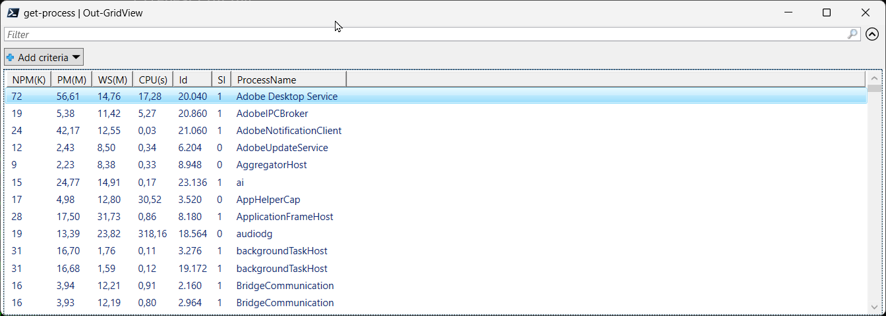

Learning objectives
- Format objects for screen output without losing data prematurely.
- Export data to common file formats.
- Explain basic string quoting and serialization choices.
Prerequisites
- Familiarity with PowerShell objects and the pipeline.
References
Single Quotes (' ')
Enclosed text is treated as a literal string. Variables and escape sequences are not expanded within single-quoted strings. Use single quotes when you want to ensure that the string remains exactly as is, without any variable substitution or escape sequence interpretation.
Example:
$name = 'John'
$greeting = 'Hello, $name!' # Output: Hello, $name!
Double Quotes (" ")
Enclosed text allows variable interpolation and escape sequences. Variables are expanded within double-quoted strings, and escape sequences (e.g., n for newline) are interpreted. Use double quotes when you want to include variable values within the string or use escape sequences.
Example:
$name = 'John'
$greeting = "Hello, $name!" # Output: Hello, John!
So, the best choice between single and double quotes depends on your specific use case. If you need to include variables or escape sequences, use double quotes. If you want a completely literal string, use single quotes.
Clear the screen
Clears the display in the host program.
Clear-Host affects only the current display. It does not delete saved results or remove any items from the session. Session-specific items, such as variables and functions, are not affected by this function.
Clear-Host
Get-Alias -Definition Clear-Host
CommandType Name Version
----------- ---- -------
Alias clear -> Clear-Host
Alias cls -> Clear-Host
Write to the screen
Write-Host
Writes customized output to a host.
Write-Host writes display text directly to the host. In PowerShell 5 and later, it also writes to the Information stream; by default it does not send objects to the success output pipeline.
Write-Host "This is a test" | Get-Member
This is a test
Get-Member: You must specify an object for the Get-Member cmdlet.
(Write-Host "This is a test").ToUpper()
This is a test
InvalidOperation: You cannot call a method on a null-valued expression.
String Object methods have nothing to do with the write-host cmdlet.
Write-Host "This is a test".ToUpper()
THIS IS A TEST
Colors:
ForegroundColor and BackgroundColor parameters.
Write-Host "Welkom bij PXL" -ForegroundColor Red -BackgroundColor Yellow
Write-Host "Success" -ForegroundColor Green -BackgroundColor Black -NoNewline;
Write-Host "Warning" -ForegroundColor Yellow -BackgroundColor Black -NoNewline;
Write-Host "Error" -ForegroundColor Red -BackgroundColor Black;
NoNewLine:
Without parameter NoNewLine.
Write-Host "no newline test "; Write-Host "second string"
no newline test
second string
With parameter NoNewLine.
Write-Host "no newline test " -NoNewline; Write-Host "second string"
no newline test second string
Useful in a script.
# Script
Write-Host "no newline test " -NoNewline
Write-Host "second string"
Write-Output
Writes the specified objects to the pipeline.
If Write-Output is the last command in the pipeline, the objects are displayed in the console.
Why?
Show solution
Write-Output sends objects to the success-output stream. A following
pipeline command can process them, a file-writing command can save a
representation, or the host can display them when no downstream command
consumes them. It does not limit output to a message drawn on the screen.
Get-Alias -Definition Write-Output
CommandType Name Version Source
----------- ---- ------- ------
Alias echo -> Write-Output
Alias write -> Write-Output
Example:
Write-Output is equivalent to:
Get-Process
Get-Process | Write-Output
Write-Output will send the output to the next command in the pipeline.
Get-Process | Write-Output | Select-String Win
Example output varies with running processes:
System.Diagnostics.Process (OneApp.IGCC.WinService)
System.Diagnostics.Process (WindowsTerminal)
System.Diagnostics.Process (WindowsTerminal)
System.Diagnostics.Process (wininit)
System.Diagnostics.Process (winlogon)
By default, Write-Host does not pass objects to the next cmdlet through the success output pipeline.
Get-Process | Select-Object -First 1 | Write-Host | Select-String Win
Write-Host displays the incoming process object in the host.
Select-String receives no objects from Write-Host, so it emits no output.
echo "Home directory: $HOME"
"Home directory: $HOME"
Get-Member shows that Write-Output passes a string object down the pipeline.
Write-Output "test output" | Get-Member
TypeName: System.String
With GetType() method.
(Write-Output "test output").GetType()
or
("test output").GetType()
IsPublic IsSerial Name BaseType
-------- -------- ---- --------
True True String System.Object
In PowerShell, a System.String represents text. PowerShell 7 is built on .NET, and simple data types like strings are objects. Sends the text as an object to the next pipeline command
Write-Output "PXL","UHasselt" | Select-Object @{Label='Overview';Expression={'I like '+ $_}}
Write-Output "PXL","UHasselt" | ForEach-Object {Write-Host 'I like' $_}
Not possible with write-host cmdlet.
(Write-Host "test output").GetType()
test output
InvalidOperation: You cannot call a method on a null-valued expression.
Write-Host "PXL","UHasselt" | Select-Object @{Label='Overview';Expression={'I like '+ $_}}
PXL UHasselt
Write-Warning
Write-Warning writes a message to the warning stream.
Write-Warning "This is a warning message."
Write-Error
Write-Error writes a non-terminating error to the error stream by default.
Write-Error "An error occurred."
Write-Verbose
Write-Verbose writes to the verbose stream, which is hidden by default unless enabled with -Verbose or $VerbosePreference.
Write-Verbose "Verbose information."
Write-Verbose "Verbose information." -verbose
Write-Verbose -Message "This is a verbose message"
$VerbosePreference
$VerbosePreference = 'continue'
Format the string
String Formatting (-f Operator)
$firstName = 'Dominique'
$lastName = 'Houbrechts'
'Hello, {0} {1}.' -f $firstName, $lastName
Hello, Dominique Houbrechts.
The string is parsed for the tokens {0} and {1}, then it uses that number to pick from the values provided. If you want to repeat one value some place in the string, you can reuse the same index. The -f operator formats values using the current culture; the date format example returns a string.
"{0:yyyyMMdd}" -f (Get-Date)
"Population {0:N0}" -f 8175133
$getal = 10.8512
$getal = $getal.ToString('N2')
$(expression)
$mijnService = Get-Service W32Time
Write-Host "The name of the service is: $($mijnService.Name)"
Write-Host 'The name of the service is:' $mijnService.Name
Formatting the output
Get-Command -Verb format
- Format-Custom
- Format-Table
- Format-List
- Format-Wide
- Format-* cmdlets control how objects are displayed.
- Format-* cmdlets emit formatting records rather than the original objects.
- Place Format-* cmdlets at the end of a pipeline when formatting for display.
Format-Table
Formats objects as a table with the selected properties in columns.
Without explicit properties, Format-Table uses the object's default table view. Specify properties to choose columns; output may wrap or truncate depending on the console width.
Get-Service W32Time | Select-Object Name, Status, StartType, CanStop
Name Status StartType CanStop
---- ------ --------- -------
W32Time Stopped Manual False
Get-Service W32Time | Select-Object Name, Status, StartType, CanStop, CanShutdown | Format-Table
Get-Service W32Time | Format-Table Name, Status, StartType, CanStop, CanShutdown
Get-ChildItem | Format-Table -Property Name, Extension, Length, CreationTime | Get-Member
TypeName: Microsoft.PowerShell.Commands.Internal.Format.FormatStartData
TypeName: Microsoft.PowerShell.Commands.Internal.Format.GroupStartData
TypeName: Microsoft.PowerShell.Commands.Internal.Format.FormatEntryData
TypeName: Microsoft.PowerShell.Commands.Internal.Format.GroupEndData
TypeName: Microsoft.PowerShell.Commands.Internal.Format.FormatEndData
PowerShell's internal formatting data types. PowerShell uses formatting data to control how the output of commands is displayed in the console. These formatting data types help structure and format the output for readability. Here's a brief explanation of each of the listed types:
Microsoft.PowerShell.Commands.Internal.Format.FormatStartData: This is a formatting data type used to indicate the start of a format section. It contains information that helps define how a particular set of objects should be formatted.
Microsoft.PowerShell.Commands.Internal.Format.GroupStartData: This type is used to indicate the start of a group within the formatting data. A group is a way to group related objects together for formatting purposes.
Microsoft.PowerShell.Commands.Internal.Format.FormatEntryData: This type is used to represent an entry or item within a formatting group. It contains information about how to format a single object.
Microsoft.PowerShell.Commands.Internal.Format.GroupEndData: This is used to indicate the end of a group in the formatting data. It closes a group defined using GroupStartData.
Microsoft.PowerShell.Commands.Internal.Format.FormatEndData: This type marks the end of a formatting section. It signals the end of formatting instructions for a set of objects.
Format-List
Formats the output as a list of properties in which each property appears on a new line.
The service status and start type shown in the examples vary by system.
Five selected properties:
Get-Service W32Time | Format-List Name, Status, StartType, CanStop, CanShutdown
Name : W32Time
Status : Stopped
StartType : Manual
CanStop : False
CanShutdown : False
Compare the default display for four selected properties:
Get-Service W32Time | Select-Object Name, Status, StartType, CanStop
Show solution
The four selected properties normally receive a table display, for example:
Name Status StartType CanStop
---- ------ --------- -------
W32Time Stopped Manual False
The preceding explicit Format-List displays its five properties as
name/value lines. Default formatting can depend on object type, metadata,
and host width; use an explicit formatting command when a layout matters.
The actual service status, start type, and Boolean values can differ.
Format-Wide
Formats objects as a wide table that displays only one property of each object.
Get-ChildItem
Get-ChildItem | Format-Wide -Column 3
Get-ChildItem | Format-Wide -Column 4
Output the information
Get-Command -verb out
Common Out-* commands include:
- Out-File
- Out-GridView
- Out-Null
Out-File
Out-File writes text to a file using PowerShell's formatting system, so it saves a display representation rather than the original objects. PowerShell 7 defaults to UTF-8 without a BOM(Byte Order Mark); Windows PowerShell 5.1 defaults to ASCII for text files. Specify -Encoding when you need a predictable encoding.
With redirection:
Get-Process > .\process_info.txt # write/overwrite
Get-Process >> .\process_info.txt # append
Use Out-File when you need its parameters. The > and >> operators are concise alternatives that overwrite and append, respectively, and use Out-File behavior.
write - output to a file:
Get-Process | Out-File .\Process_Services.txt
read - content from a file:
Get-Content .\Process_Services.txt
append content to a file:
Get-Service | Select-Object Name -First 10 | out-file -Append .\Process_Services.txt
NoClobber:
-NoClobber prevents an existing file from being overwritten and reports an error if the file already exists.
Get-Process | Out-File .\Process_Services.txt -NoClobber
Out-GridView
Sends output to an interactive table in a separate window.
Get-Process | Out-GridView

Out-Null
Discards objects sent to the success output stream instead of displaying or passing them down the pipeline. Other streams are not suppressed.
Out-Null can be useful in scripts or commands where you only care about the side effects of a command (e.g., modifying a system state) and don't need to see the output
choco install microsoft-windows-terminal --upgrade -y | Out-Null
Chocolatey's upgrade command also installs a package if it is not already installed.
Convert / export / import
Keep data structured until presentation
flowchart LR
A["PowerShell objects"] --> B["Select properties"]
B --> C["Export-Csv: write rows"]
C --> D["Import-Csv: read objects"]
D --> E["CSV field values are strings"]
B --> F["Format-Table: display only"]
Choose the export path before formatting: Format-Table produces formatting
objects, not the original report rows.
Get-Command -verb ConvertTo
ConvertTo-Html:
ConvertTo-Html is valuable for generating reports, documenting system information, and sharing data in a more structured and visually appealing format. It is commonly used in scripting and automation tasks where you need to convert PowerShell data into a readable and presentable format for documentation or reporting purposes.
Get-Date | Select-Object *
ConvertTo-Html -InputObject (Get-Date) | Out-File dateInfo.html
Invoke-Item dateInfo.html
Get-ChildItem | ConvertTo-Html | Out-File host_files.html
Get-ChildItem c:\windows | Select-Object name | ConvertTo-Html | out-file WinFiles.html
Get-WinEvent 'Security' -MaxEvents 10 -FilterXPath '*[System[EventID=4625]]' | Format-Table
Export/ConvertTo-Csv:
Export-Csv converts input objects to CSV rows; Import-Csv reads rows back as objects with string-valued fields. In PowerShell 7, both default to UTF-8 without a BOM; Windows PowerShell 5.1 defaults to ASCII for CSV. Specify -Encoding when you need a predictable encoding.
Get-ChildItem -Path 'C:\Windows\System32' | Export-Csv .\logboek.csv
Get-ChildItem -Path 'C:\Windows\System32' | ConvertTo-Csv | Out-File logboek.csv
Error warning: Get-ChildItem may throw errors for some directories due to permission issues. Use -ErrorAction SilentlyContinue to suppress these errors if needed.
Import-Csv .\logboek.csv | Select-Object -First 5
Export-Clixml:
$logboekPath = Join-Path $env:TEMP 'logboek.xml'
Get-ChildItem -Path .\ -Recurse | Export-Clixml -Path $logboekPath
Import-Clixml:
Import-Clixml -Path $logboekPath
Import-Clixml -Path $logboekPath | Get-Member
Import-Clixml -Path $logboekPath | Select-Object Name, extension, Length, LastAccessTime
Why use Serialization?
Serialization converts an object into a format such as XML or JSON for storage, transfer, or sharing. Deserialization reconstructs an object; some .NET objects are restored as deserialized representations rather than their original runtime types.
Why Use Serialization?
- Persistence: Save object states to files for later use.
- Communication: Send objects over the network or between processes.
- Data Exchange: Exchange structured data in a standardized format like JSON or XML.
Example: Using XML Serialization
Step 1: Create and Serialize an Object
# Step 1: Create a custom object
$person = [pscustomobject]@{
FirstName = 'John'
LastName = 'Doe'
Age = 30
}
# Step 2: Serialize the object to XML and save to a file
$xmlFilePath = Join-Path $env:TEMP 'person.xml'
$person | Export-Clixml -Path $xmlFilePath
Write-Host "Serialized object saved to $xmlFilePath"
Step 2: Deserialize the Object
Read the serialized XML file and convert it back into a PowerShell object.
# Step 3: Import the XML file and deserialize it back into an object
$importedPerson = Import-Clixml -Path $xmlFilePath
# Step 4: Display the deserialized object
Write-Host "Deserialized object:"
$importedPerson
Example: Using JSON Serialization
Step 1: Create and Serialize an Object to JSON
# Step 1: Create a custom object
$car = [pscustomobject]@{
Make = 'Tesla'
Model = 'Model S'
Year = 2022
}
# Step 2: Convert the object to JSON format
$json = $car | ConvertTo-Json
# Step 3: Save the JSON to a file
$jsonFilePath = Join-Path $env:TEMP 'car.json'
Set-Content -Path $jsonFilePath -Value $json
Write-Host "Serialized object saved to $jsonFilePath"
Set-Content creates or replaces file contents; it does not append. PowerShell 7 defaults to UTF-8 without a BOM, while Windows PowerShell 5.1 defaults to the system ANSI code page. Specify -Encoding for a predictable encoding.
Step 2: Deserialize the JSON Object
# Step 4: Read the JSON file and deserialize it back into an object
$jsonContent = Get-Content -Path $jsonFilePath -Raw
$importedCar = $jsonContent | ConvertFrom-Json
# Step 5: Display the deserialized object
Write-Host "Deserialized object:"
$importedCar
Summary of Serialization/Deserialization Uses
- Data Persistence: Save complex data structures to a file and reload them as needed.
- Data Sharing: Share data between scripts, applications, or systems in a structured format.
- Configuration Storage: Store configuration settings or object states in a file for later use.
These serialization techniques enable easy manipulation of data and help in scenarios like backups, configuration management, and communication between different components or systems.